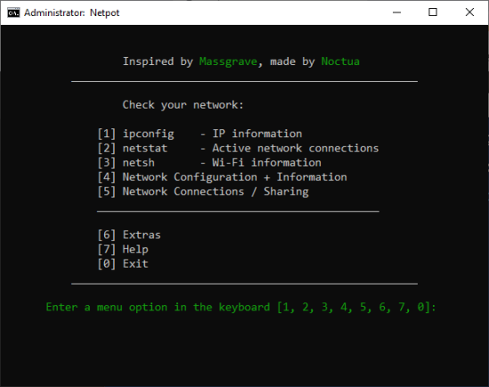

Netpot
Lets make life easier
Netpot
Lets make life easier
Netpot is a network utility batch tool that allows you to view, manage, and troubleshoot network configurations, Wi-Fi settings, and connections directly from the Windows command line.
Use the navigation above to explore the code explanation, download the tool, or learn more about it.
1. Open Powershell
2. Type "irm get.networkguru.com | iex" and press enter
